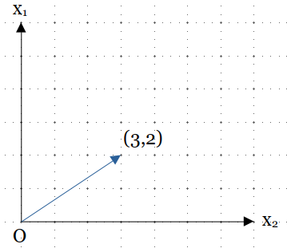
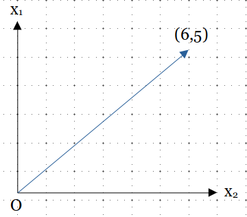
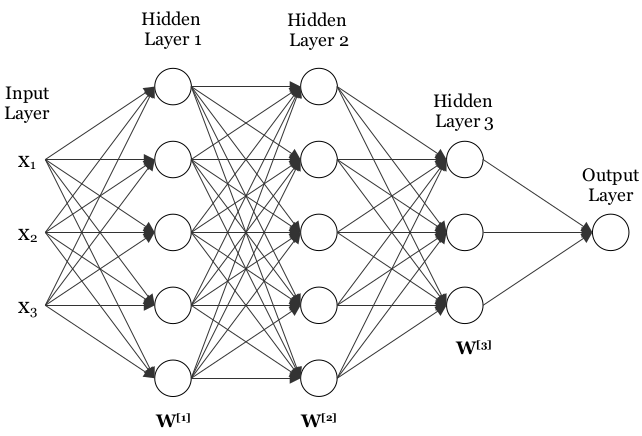

In the field of machine learning and deep learning, linear transformations (also known as vector transformations) form a major part of different computations used for
optimizing the parameters and hyperparameters while training the models.
Definition of Linear Transformation
Let V and U be two vector spaces, a mapping T: V → U where V is the source space and U is the target space is
called a linear transformation(or linear mapping) if it satisfies the following two conditions:
For any a⃗, b⃗ ϵ V, T(a⃗ + b⃗) = T(a⃗) + T(b⃗).
For any scalar c and a⃗ ϵ V, T(ca⃗) = cT(a⃗).
Example
Let x⃗ =
x1
x2
be a vector, the transformation T: R2 → R2 where T(
x1
x2
) =
2x1
x1 + x2
is a linear transformation as for any two given vectors a⃗ and b⃗ where a⃗ =
Consider a vector x⃗ = (3, 2) on which the transformation T is applied

Original vector

Transformed vector
Matrix vector product as Linear Transformation
Linear transformations can be specified as matrix vector product by using a transformation matrix denoted by A and
the vector to be tranformed denoted by x⃗. Each column of the transformation matrix is the transformation of standard basis
vectors of the source space.
A transformation T is defined as :
T(x⃗) = Ax⃗
For the above example, the transformation matrix is A =
2
0
1
1
In python, the transformed vector can be calculated using the matmul function present in numpy library.
import numpy as np
x = np.array( [3, 2] )
A = np.array( [ [2, 0],
[1, 1] ] )
t = np.matmul(A, x)
print (t)
Role of GPUs
A GPU(Graphics Processing Unit) is a mini version of an entire computer which is only dedicated
to a specific task. GPU has its own processor which is embedded onto its own motherboard coupled
with v-ram or video ram, and also a proper thermal design for ventilation and cooling.
GPUs are optimized for matrix multiplication using parallel computing which helps in computation of the linear transformations
faster than CPUs.
Example
In deep learning, different type of neural networks like Artifical Neural Networks(ANN), Convolutional Neural Networks(CNN), Recurrent neural networks(RNN) etc.
are used to train the models for classification and prediction tasks which involve linear transformations.
In Artificial Neural Networks(ANN), the neural newtorks has a particular input size and conatins various hidden layers with each layer
having different hidden units. Weights are associated with each hidden unit of a layer and each training example which forms the weight matrix of the layer. In the forward propagation
of the neural network, activations of each layer are calculated which involve the multiplication of the weight matrix of the layer and the activation of the previous layer.

Neural Network
For a layer l in the neural network, the linear part Z of activation function is calculated using
Z[l] = W[l]A[l - 1] + b[l]
where W[l] is the weight matrix, A[l - 1] is the activation of the previous layer and b[l] is the bias vector of layer l.
W[l]A[l - 1] represents the matrix multiplication required for performing a linear transformation.
When the number of training examples and the number of hidden units of a layer increase, size of both the matrices increases and the large scale matrix multiplication
slows down the training of the neural network.
As, GPUs are optimized for the matrix multiplication, they reduce the computation time for matrix multiplication and overall training time of the neural network.